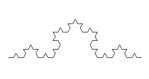
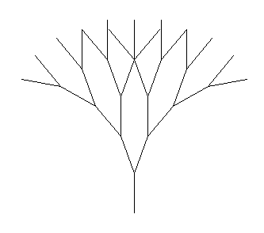

Eleanor's Fantastic Fractals
Koch Curves
Basic Koch Curve
koch_curve(t, 4, 10)

Modified Koch Curve
This modified Koch Curve is different from the basic koch curve because it has one more recursive step and t.rt(120). If the turtle has a depth of at least 5, it forms a closed geometric shape (similar to the shape of a snowflake). The width of each line also changes and it is determined from a random range of width 2 to 5.
koch_snowflake(t, 5, 10)

def koch_snowflake(t, depth, size):
if (depth == 1):
t.fd(size)
else:
t.width(random.randrange(2, 5))
koch_snowflake(t, depth-1, size)
t.lt(60)
koch_snowflake(t, depth-1, size)
t.rt(120)
koch_snowflake(t, depth-1, size)
t.lt(60)
koch_snowflake(t, depth - 1, size)
t.rt(120)
Sierpinski Triangle
Basic Sierpinski Triangle
sierpinski(t, 3, 100)

Modified Sierpinski Triangle
This modified sierpinski triangle draws hexagons in addition to triangles. This modified (if depth == 1) code give the triangle a different, more geometric shape. Each hexagon that the turtle draws is also a different random color.
hexagon_sierpinski(t, 6, 100)

def hextriangle(t, size):
t.rt(60)
t.fd(size)
t.rt(60)
t.fd(size)
t.rt(60)
t.fd(size)
t.rt(60)
def hexagon_sierpinski(t, depth, size):
if depth == 1:
hextriangle(t, size)
else:
t.pencolor((random.randrange(1, 255), random.randrange(1, 255), random.randrange(1, 255)))
t.width(1)
hexagon_sierpinski(t, depth-1, size/2)
t.fd(size/2)
hexagon_sierpinski(t, depth-1, size/2)
t.bk(size/2)
t.lt(60)
t.fd(size/2)
t.rt(60)
hexagon_sierpinski(t, depth-1, size/2)
t.rt(120)
t.fd(size/2)
t.lt(120)
Fractal Trees
Basic Fractal Tree
tree(t, 4, 50, 20)

Modified Fractal Tree
This modified fractal tree has different colors: red on the ends of the outermost branch, green on the rest of the outmost branch, and brown for the rest of the bush. The bush also has increasing larger sizes by multiplying the size by the depth times 2 (the ends of the branches are much longer than the base of the branches). The smaller the depth, the more the length of the branch increases.
sharp_bush(t, 5, 50, 20)

def sharp_bush(t, depth, size, angle):
if depth == 0:
t.pencolor("green")
t.fd(size)
t.pencolor("red")
t.fd(size/10)
t.pu()
t.bk(size + (size/10))
t.pencolor("brown")
t.pd()
else:
t.width(3)
t.fd(size/(2 * depth ))
t.rt(angle)
sharp_bush(t, depth-1, size, angle)
t.lt(2 * angle)
sharp_bush(t, depth-1, size, angle)
t.rt(angle)
t.bk(size/(2 * depth))